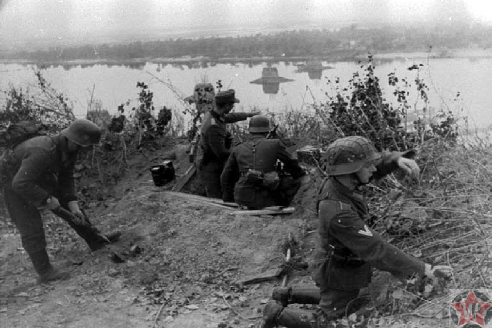

1943
|
|
|
|
Основные факты о битве за Днепр 1. Предыстория- После поражения под Сталинградом и победы под Курском советские войска начали стремительное продвижение на запад. Ситуация на фронте была в пользу СССР, и командование решило сформировать планы по переходу через Днепр. 2. Подготовка- В летние месяцы 1943 года советское командование провело подготовку к наступлению. Были созданы планы по форсированию Днепра, который представлял собой стратегически важный водный рубеж. 3. Форсирование Днепра- С 26 сентября по 23 октября 1943 года советские войска осуществили мощное наступление на различных участках фронта. Важно отметить, что операция по взятию ключевых мостов и переправ, таких как в районе Киева, сыграла важную роль в успешном форсировании. 4. Киевская операция- В конце сентября 1943 года советские войска освободили Киев. Это событие имело не только стратегическое, но и символическое значение для всего советского нарратива, так как Киев был столицей Украины и важным культурным центром. 5. Бои на правом берегу- После форсирования Днепра бои продолжались на правом берегу реки, где советские войска стремились закрепиться и отразить контратакующие действия противника. Осада таких городов, как Чернигов и Полтава, была частью более широкого контекста. 6. Завершение операции- К декабрю 1943 года Красная армия окончательно укрепила свои позиции на западном берегу Днепра, что позволяло ей планировать дальнейшие операции по освобождению Украины и продвижению в Центральную Европу. |
|
|  |
Битва за Днепр стала одной из самых масштабных и интенсивных битв Второй мировой войны. Это сражение привело к значительным потерям с обеих сторон, однако СССР смог значительно сократить пространство, контролируемое нацистами, и продолжить успешные операции в 1944 году, что в конечном итоге привело к освобождению всей территории Украины и дальнейшему наступлению на Берлин. Битва за Днепр также оставила глубокий след в истории и памяти народов, участвовавших в этой войне. |